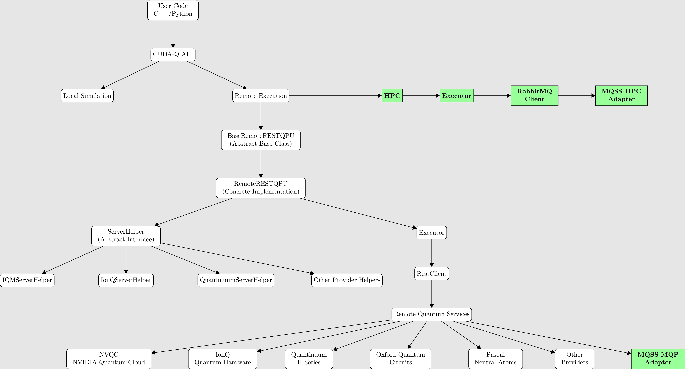
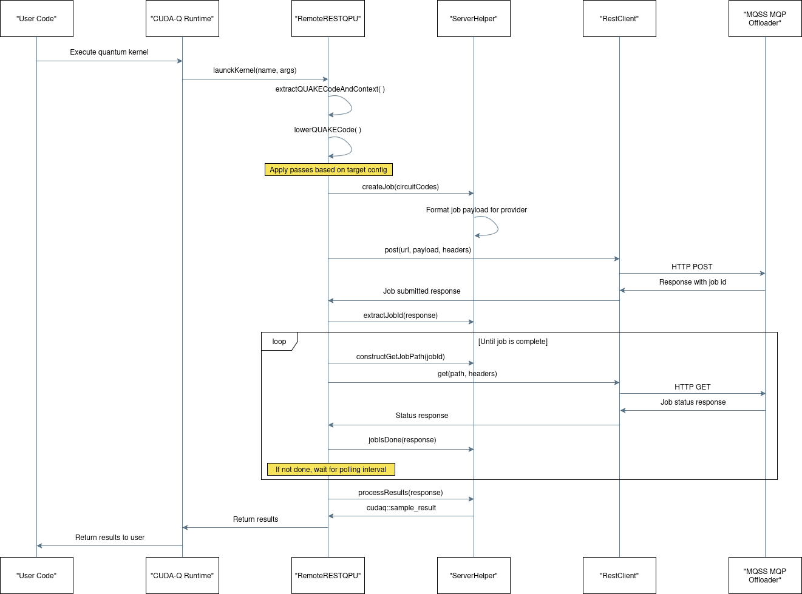
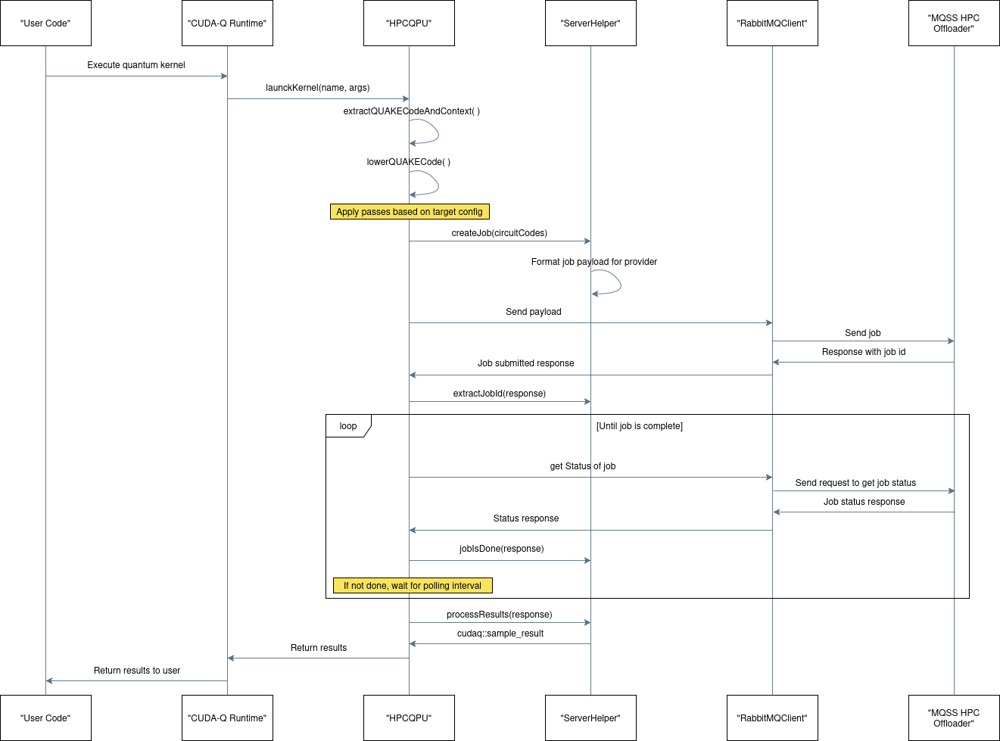

|
CUDA-Q Adapter v0.1
|
|
CUDA-Q Adapter v0.1
|
The diagram illustrates the architecture and execution flow of CUDA-Q, NVIDIA's hybrid quantum-classical platform, showing how quantum programs written by users are processed and executed, either locally or on remote backends. At the top, the flow begins with the user's quantum-classical code written in either C++ or Python, which interfaces with the CUDA-Q API. This API acts as the central entry point and splits the execution path into two main directions: local simulation and remote execution.

For local simulation, the path is straightforward—the user's quantum code is executed directly on the local system using CUDA-Q's built-in simulators. This is primarily for development and testing. In contrast, remote execution follows a more complex route. One path leads toward HPC (High-Performance Computing) systems. In this path, CUDA-Q communicates with an Executor, which manages the execution logic and passes jobs through a RabbitMQ client. This client interacts with the MQSS HPC Adapter, which serves as the interface to external HPC resources.
Parallel to this, CUDA-Q supports execution on remote quantum devices via REST interfaces. This implementation as part of CUDA-Q is backed by a modular ServerHelper interface that standardizes how different quantum providers are integrated. Multiple provider-specific helpers (like IonQServerHelper, IQMServerHelper, and QuantinuumServerHelper) implement this interface, enabling seamless interaction with each platform.
Additionally, there's a final link from Remote Quantum Services to the MQSS MQP Adapter, which facilitates further integration into the MQSS.
In essence, this diagram shows how CUDA-Q abstracts the complexity of routing quantum workloads—offering flexible paths to simulators, HPC infrastructures, and actual quantum hardware—while maintaining a modular, provider-agnostic design through abstract interfaces and adapters.
This diagram illustrates the sequence of operations when a CUDA-Q quantum kernel is executed on a remote backend, using the RemoteRESTQPU interface, which is the same path followed by the MQSS MQP access. Below is a step-by-step description of the flow, across the involved components:

launchKernel(name, args) function in the CUDA-Q Runtime.RemoteRESTQPU is invoked by the runtime.extractQUAKECodeAndContext() – Extracts the intermediate QUAKE code representation and contextual data.lowerQUAKECode() – Lowers the QUAKE code into a backend-compatible form.RemoteRESTQPU calls createJob(circuitCodes) to construct the job.post(url, payload, headers) – an HTTP POST request.RemoteRESTQPU:extractJobId(response).constructGetJobPath(jobId).GET(path, headers) request to query job status.RemoteRESTQPU checks if the job is complete:jobIsDone(response)processResults(response)cudaq::sample_result.RemoteRESTQPU → CUDA-Q Runtime → User Code.For more information about how to extend CUDA-Q remote devices via REST API, please refer to Extending CUDA-Q with a new Hardware Backend.
This diagram outlines the remote quantum kernel execution flow in a CUDA-Q environment using CUDA-Q MQSS Adapter using the HPC access. Here's a step-by-step breakdown of the process shown:

launchKernel(name, args) function in the CUDA-Q Runtime.HPCQPU is invoked by the runtime.extractQUAKECodeAndContext() – Extracts the intermediate QUAKE code representation and contextual data.lowerQUAKECode() – Lowers the QUAKE code into a backend-compatible form.HPCQPU calls createJob(circuitCodes) to construct the job.HPCQPU:extractJobId(response).HPCQPU checks if the job is complete:jobIsDone(response)processResults(response)cudaq::sample_result.HPCQPU → CUDA-Q Runtime → User Code.